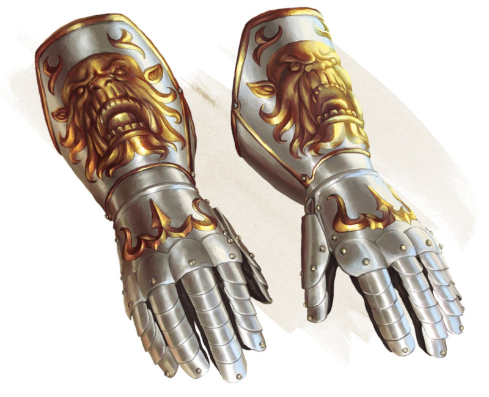

Gantelets de puissance d'ogre
Objet merveilleux, peu commun (nécessite un lien)
Votre Force est de 19 tant que vous portez ces gantelets. Les gantelets n'ont aucun effet sur vous si votre Force est de 19 ou plus sans eux.
Dungeon Master´s Guide (SRD)
